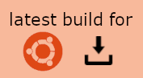

A free 3D editor for creating ASAM OpenDRIVE-format road network, and running traffic simulation on top of it.
Inspired by the famous title Cities:Skylines, this work is focused on replicating its most fun part: traffic planning.
Named after the all-rounder MathWorks RoadRunner, this software is intended for casual users and hobbyists, providing solid core functionalities and easy experience, leaving behind steep learning curve and money investment.
 Requires VC++ Redistributable
Requires VC++ Redistributable

Debian built for
Ubuntu 24.04 LTS
Ubuntu 24.04 LTS
Dedicated GPU recommended for scaled simulation
Special Thanks to
- OpenDRIVE online viewer for familiarizing me with OpenDRIVE in an intuitive way.
- libOpenDRIVE as an important open-source library behind the scene.


 Modify mode Two clicks on the same road, then apply a new profile to the segment.
Double-click to select entire length.
Modify mode Two clicks on the same road, then apply a new profile to the segment.
Double-click to select entire length.